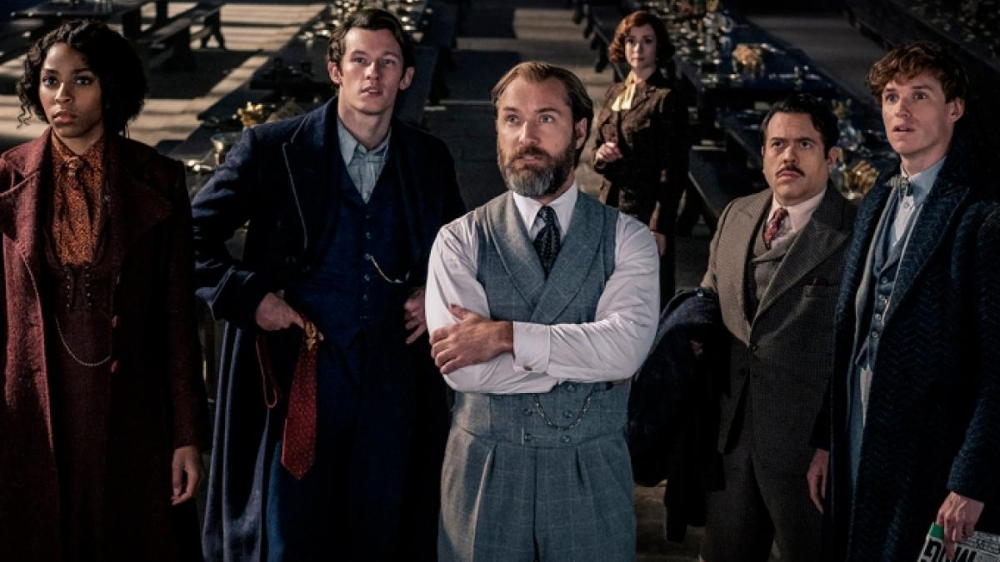
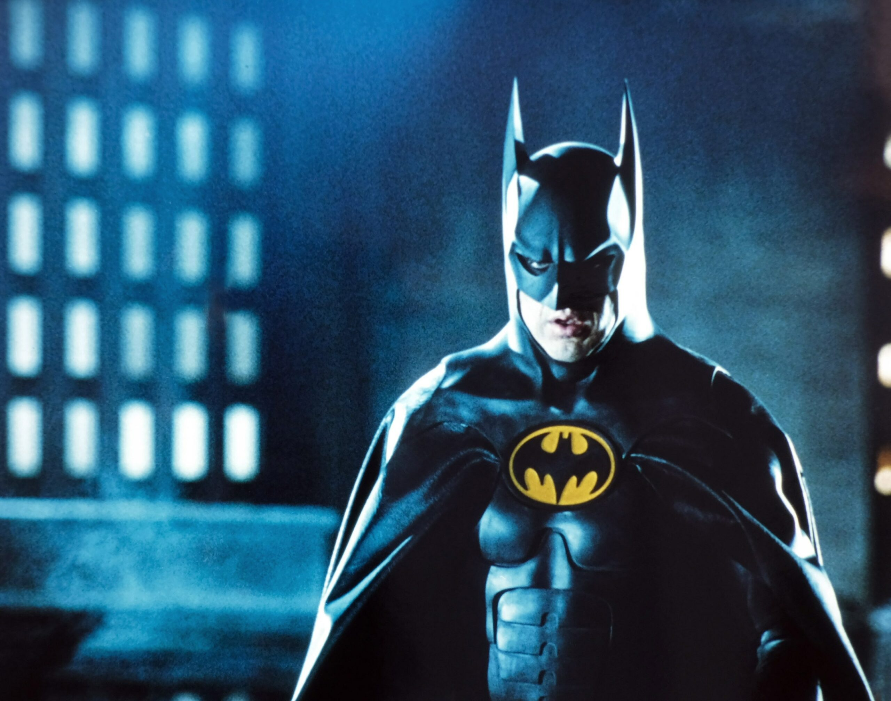
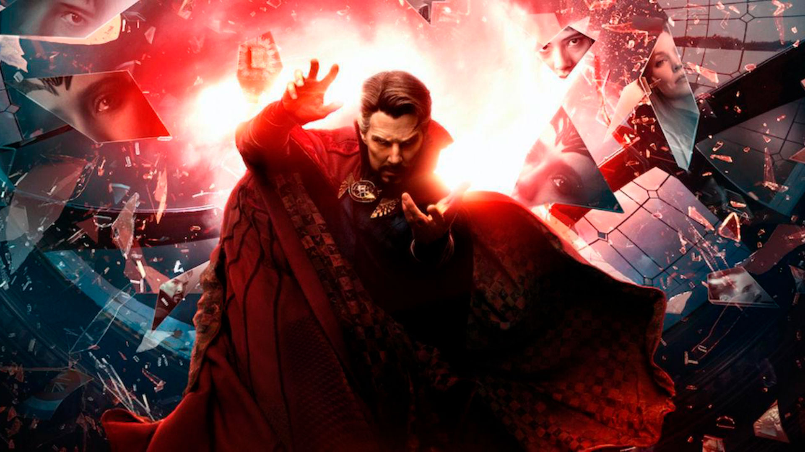
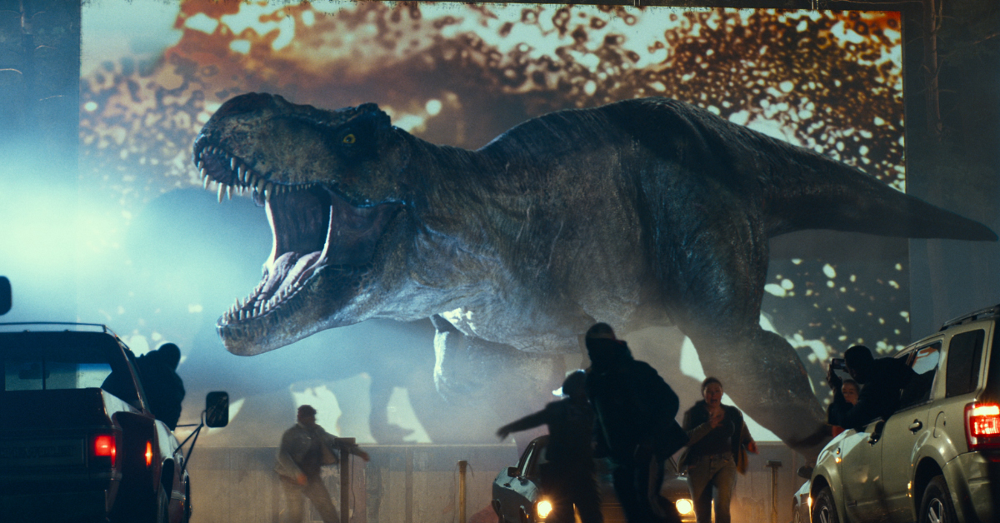
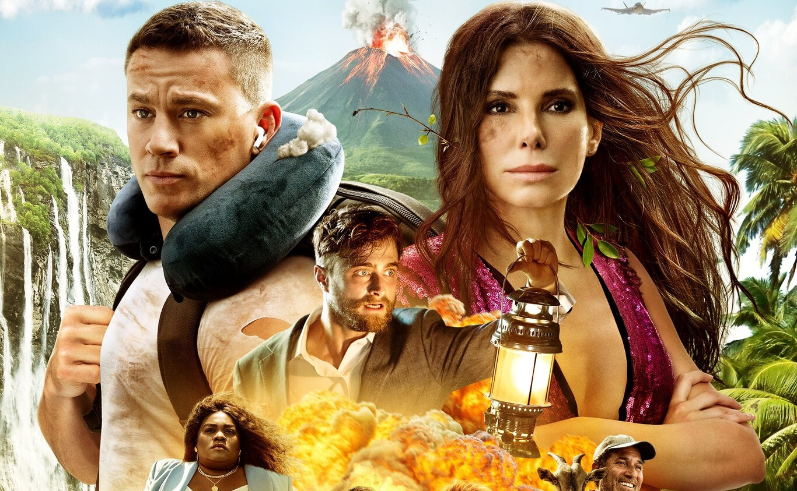

|

|
Animales fantásticos: Los secretos de Dumbledore
Es una secuela directa de Animales fantásticos: Los crímenes de Grindelwald, y la tercera entrega
de la serie de películas basadas en Animales fantásticos y dónde encontrarlos, uno de los libros
complementarios de la Serie Harry Potter de J. K. Rowling, siendo en general la undécima película
ambientada en el mundo mágico. La película está dirigida por David Yates, con un guión de J. K. Rowling
, y Steve Kloves regresa para ayudar. Las estrellas que regresan son Eddie Redmayne, Jude Law, Katherine
Waterston, Dan Fogler, Alison Sudol, Ezra Miller, Callum Turner, William Nadylam, y Mads Mikkelsen se une
al elenco. Esta película se estrenará el 8 de abril de 2022 en el Reino Unido, Irlanda y Japón
y el 15 de abril de 2022 en el resto del mundo.
- Fecha de estreno:8 de abril de 2022 (Reino Unido)
- Director:David Yates
|
|

|
The Batman
En su segundo año luchando contra el crimen, Batman explora la corrupción existente en la ciudad de Gotham y el vínculo de esta con su propia familia. Además, entrará en conflicto con un asesino en serie conocido como "el Acertijo".
- Fecha de estreno:4 de marzo de 2022 (Estados Unidos)
- Director: Matt Reeves
- Recaudación:770,3 millones USD
- Música:Michael Giacchino
- Clasificación:PG-13
- Presupuesto:
$180 millones
|

|
Avatar 2
Jake Sully y Ney'tiri han formado una familia y hacen todo lo posible por permanecer juntos. Sin embargo, deben abandonar su hogar y explorar las regiones de Pandora cuando una antigua amenaza reaparece.
- Fecha de estreno: 16 de diciembre de 2022 (Estados Unidos)
- Director:
James Cameron.
|
|
|
Jujutsu Kaisen 0:
Yuka Okkotsu obtiene el control de una maldición extremadamente poderosa y acaba inscrito en el Colegio Técnico de Magia Metropolitana de Tokio, donde otros hechiceros deciden ayudarlo a controlar y vigilar su poder.
- Fecha de estreno inicial:24 de diciembre de 2021
- Director: Park Sung-hoo
- Recaudación: 188,5 millones USD
|
|

|
Doctor Strange en el Multiverso de la Locura
El Dr. Stephen Strange abre un portal al multiverso al utilizar un hechizo prohibido. Ahora, su equipo debe enfrentarse a una amenaza que podría destruirlo todo.
- Fecha de estreno: 6 de mayo de 2022 (Estados Unidos)
- Director:Sam Raimi.
|
|
|
Top Gun: Maverick
Maverick, quien lleva 30 años de servicio, es ahora instructor de pilotos militares. Una última misión, un sacrificio final, obliga a este maestro de los cielos a enfrentar las heridas abiertas del pasado y sus temores más profundos.
- Fecha de estreno:27 de mayo de 2022 (Estados Unidos)
- Director:Joseph Kosinski
- Recaudación: $583 408 619
- Guion:
Peter Craig; Christopher McQuarrie; Justin Marks; Eric Warren Singer; Ashley Miller; Zack Stentz; Ehren Kruger
- Protagonistas: Tom Cruise; Val Kilmer; Miles Teller; Jennifer Connelly; Glen Powell; Thomasin McKenzie; Ed Harris
- Presupuesto: $170 000 000
|
|

|
Jurassic World: Dominion
La isla Nublar y su parque han sido destruidos, pero el problema no se terminó. Con los dinosaurios dispersos por todo el
mundo, la convivencia entre el presente y el pasado alcanza un nuevo nivel de tensión.
- Fecha de estreno:10 de junio de 2022 (Estados Unidos)
- Director:Colin Trevorrow
- Presupuesto:$165 000 000
- País:
Estados Unidos
- Recaudación:
$55 723 000
|
|

|
La ciudad perdida
La escritora solitaria Loretta Sage escribe sobre lugares exóticos en sus populares novelas de aventuras con un
atractivo modelo de portada, Alan. Mientras está de gira promocionando su nuevo libro, es secuestrada por un excéntrico
multimillonario.
- Fecha de estreno:25 de marzo de 2022 (Estados Unidos)
- Directores:Aaron Nee, Adam Nee
- Recaudación:185,5 millones USD
- Presupuesto:68 millones USD
- Productores:Sandra Bullock, Seth Gordon, Liza Chasin
- Guion:Aaron Nee, Seth Gordon, Adam Nee, Dana Fox, Oren Uziel.
|
|
|
Uncharted
El cazador de tesoros Victor Sullivan recluta a Nathan Drake para que lo ayude a recuperar una fortuna de 500 años de antigüedad. Lo que comienza como un atraco se convierte en una competencia contra el despiadado Santiago Moncada.
- Fecha de estreno: 18 de febrero de 2022 (Estados Unidos)
- Director:Ruben Fleischer
- Recaudación: 401,1 millones USD
- Protagonistas:Tom Holland; Mark Wahlberg; Sophia Ali; Tati Gabrielle; Antonio Banderas
- Adaptaciones de: Uncharted
- Productora:Columbia Pictures; PlayStation Productions; Atlas Entertainment; Arad Productions
|